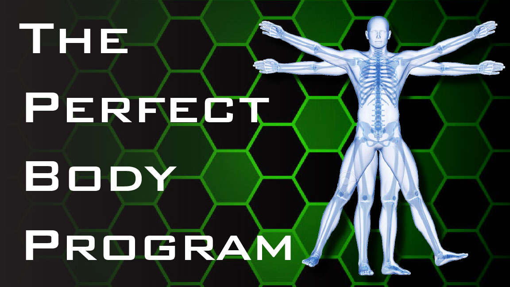
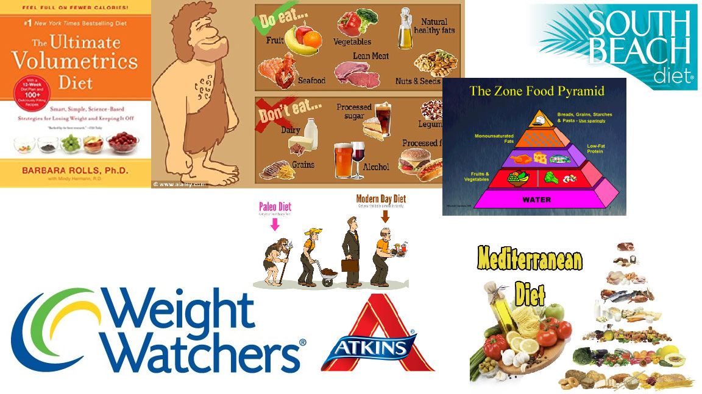
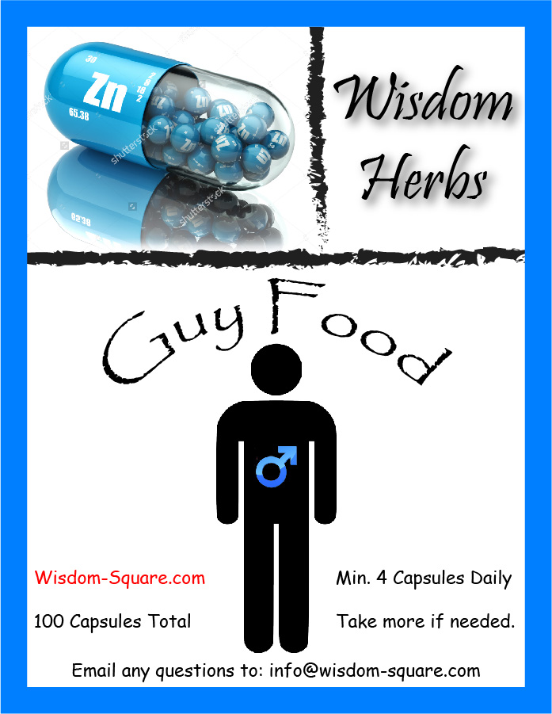

The LAST program and community you will need for losing weight (30-50 pounds) -- without a gym membership, running or dieting -- that KEEPS it off for years to come.
The Tragedy of Mediocrity
It's another Wednesday night. You just got home and after a long day at work, you open the cabinet and stare blankly for a moment wondering... "what the hell is for dinner?"
You are done with thinking for the day, and just want to kick back. You're too overwhelmed and exhausted to make this decision. You blink and hear a little voice whispering, "eat something healthy" but that quickly fades away once you see something quick to grab...
potato chips, frozen pizza, some ice cream.
Rinse and repeat...
Now it's a year later and you're slightly more overweight than the year prior. How many times has it been this week that you went out to eat or ordered food to be delivered? To be honest and fair... we don't have time to cook after work, go to the gym, or run. And most of our friends don't do that either. So what options are left on the table for us? Admit defeat and move on? Convince yourself...
"This is just the way I am. Time to accept it and work with what I've got."
If you're like me you're screaming: "NOOO"
None of us want to end up as just another statistic. None of us want to get winded after climbing two stories of stairs. Why should we have to live with compromise?
Imagine instead being called sexy and not having to feel weird about it. I repeat, not having to feel weird about it. Waking up on Saturday morning proud of yourself that you're where you want to be based on the work you put in. Your partner no longer pushes you away because "it's too hot." You can't wait to show off your stomach, because now it's your trophy to show the world that you're in control of your body... life... goals.
Just about everyone is going to tell you that in order to get here you NEED to spend hours each day between going to the the gym, running, cooking... and there's no days off... that's what James thought.
James the Middle School Teacher

James is a real person and a school teacher, with very little extra time.
After the school day ends, he spends hours planning what he will be doing the following week. He loves his job, but has recently been motivated to lose weight ever since his girlfriend left him. Plus, he knows it would please his doctor to see some positive change.
Most importantly, he wants to feel good again about who he is and losing weight will be one HUGE thing he's been meaning to check off. Now he's finally ready to put in the work. He didn't want to do it alone though, so he searched high and low across the internet for advice.

He soon realized that googling anything would lead down a path of ads and conflicting information. But he was determined to crack the code. Finally he got lucky and discovered a system of eating unlike any of the others.
Since then he's been able to buy new clothes that before he would never imagine fitting, has caught the attention of the girl at the grocery store, and keeps getting compliments on his progress each day at work. Even though he keeps playing it off like it's not a big deal, inside he's THRILLED with himself.
What is it that he learned, that even a busy teacher could accommodate in their life?
Well first off, let's start with what he didn't learn to do.
He didn't waste energy on trying to count calories and didn't fall into the trap of beguiling advertisement labels.
To really eat healthy, we need to focus on...
Secrets most people don't realize
You can lose weight without looking sick during the process. You can still socialize over the weekends. But you just need to know what you need to focus on v.s. what you don't -- whether you're giving yourself a deadline to lose weight within 3 months or 7 months.
Introducing The Perfect Body Program, the course for ambitious young professional men and women who want to get rid of clingy fat fast.
Get Instant Access and receive:
• The mental steps needed to change our thinking pattern to overcome the negative thoughts that keep us from losing weight.
• The exact “before & after” recipe remixes for America's most common favorites meals (most of these have never been shared anywhere else).
• The best places to find the highest nutrient-dense foods to keep your body feeling AMAZING and not craving junk (including online shopping).
Now for only $87. Comes with my no-questions asked, 30-day money back guarantee.
Plus: Lifetime access to my private email address with unlimited and immediate question support for years to come to better help you on your unique journey (a priceless value)
Bonus #1: for a limited time for only the first 50 people, you will receive a free Skype call session with me where you can describe your unique situation and I can give you live feedback instantly to help you in addition to the other material downloads you gain access to. You set the day and time at your convenience for us to have the private call so it can fit your schedule.
Bonus #2: the first 50 people that join will also receive in the mail 2 bottles of herbal capsules... one being a cleanse and the other composed of herbs you should take daily. (this alone is worth more than the cost of the course, but instead it's FREE at no additional cost to you)
|
 |
This is the culmination of years of research.
Don't ever feel stuck at not knowing what to eat, how to prepare it, and where to get it from. You don't have to feel stuck in a body you don't want.
"The fitness and nutrition world is a breeding ground for obsessive-compulsive behavior. The irony is that many of the things people worry about have no impact on results either way, and therefore aren't worth an ounce of concern." - Alan Aragon
Instead of giving you lists of the top 100 things to do (which leads to getting overwhelmed and not doing anything), I'm just going to show you the fewest amount of things that will get you the largest results in return. Knowing what to focus on is just as important as not worrying about the minutiae, wasting time and energy.
If you ever wanted to work with someone who’d get your lifestyle and help you lose weight without overwhelm and guilt-tripping, this is YOUR chance.
If you’ve ever wanted to make a lifestyle change and not a quick fix that fads away faster than it started, this is IT.
If you’ve been thinking about being a healthy role model for your kids, without sacrificing on taste, NOW is the time.
Who is this not for?
I'll be honest, this is not for people looking for a new diet fad to try.
THIS IS NOT A DIET.
If diets actually worked, we wouldn’t have to go on so many of them. It's because diets leave us feeling deprived that they fail us. If you're looking to solely rely on sheer willpower, it can only last you but so long. You need something else to keep you going strong 1 year from now, 5 years, 20 years, etc.
Rather than going on short-term diets that don't work for most real people, we're much better to opt for a LONG-term eating plan that can give us the results we want without it being so impossibly hard to follow.
The really frustrating part is that I bet you know someone skinny that seems to get a pass. They get to eat whatever it is they want and however much they want without gaining any weight. This person might even eat twice as much as you during a meal, and yet for some CRAZY reason only you suffer. One of the main reasons for this might just be that person doesn't have the same food sensitivity that you do. Millions of people are allergic to different hybrid food to varying degrees and they don't even realize it half the time. It's not until you remove a certain food to see how you feel, then you'll know and can target what specifically is hurting you.
Testimonials
"I don't have time for anything. I joined this course thinking I wouldn't be able to go all the way through it, but at least maybe take away a few good tips. Not only did I get some good tips, I was actually able to complete the course and learn time saving strategies to help me practice living this lifestyle every day. I love how easy this course was for me to go through and take away from." - Sarah Hyson
"I thought this was too expensive, but I realized that I've skipped over many opportunities in my life to invest in myself. So I finally decided to commit to something and because of this program have so far lost 33 pounds. I feel much better than I ever had." - Timothy Meyers
"I'm convinced this is the greatest program if you want to lose weight. Not only have I reached my weight loss goal, I was able to do so without the normal cravings that I would get. So this was a lot easier than I thought. I couldn't believe my cravings for junk food slowly went away and I would feel less hungry throughout the day. All while only having to change a few hours a week of what I would normally do, instead of a few hours each day like I thought. But I've also noticed other differences. When I wake up, I no longer have the sluggish fatigue in me that craves "5 more minutes." I am attentive in a natural way rather than wired from caffeine throughout the day. I also feel like the quality of my sleep / rejuvenation is maximized regardless of how long I decide to sleep." - Khalil Hamilton
"I haven't been as anxious and nervous during certain situations that I would usually be nervous or anxious in. I'm enjoying the peace!" - Darrell W.
"My sex life was already great, but now it's even better. My erections are insane... lmao. I feel great.. energized and very alert. I honestly love this." - A.M.
Go through the entire "Perfect Body Program" risk free for 30 days.
If you don't LOVE your body after this program, then I sincerely want you to get 100% of your money back. Let me tell you why.
I show you the best food you should be eating, how to prepare it, and the mindset you need to keep you going strong. The psychology part is key and we're going to spend a special amount of time on it.
This is perfect for busy people who don't have any time to spare to attend a gym. The focus is on quality, and I'm confident you will be amazed at the results.
I spent YEARS studying and comparing what people have to say about nutrition and weight loss, and have tested it all out so you don't have to waste any time or money. I'm very confident that nobody else has spent as much time researching as many sources as I have. That means the system I finally decided to offer you will get you results unlike any other program available.
I believe in doing it right the first time. This course isn't just about losing weight or becoming more healthy... it's about feeling AMAZING and then being able to share that with the world. It's about becoming a better version of yourself and inspiring others that anything is possible -- my life's work. And if I can help you fit into great looking clothing, turn heads, get a date, or impress your partner and your doctor... I consider it a job well done.
So here's my offer: If you don't LOVE how your body looks and feels after this program, I want you to get 100% of your money back. It's that easy: Join the program and see for yourself.
Join Now for Only $87
P.S.
$11,500 to $26,000
The average cost of bariatric surgery, which reduces the size of the stomach.
WARNING: The Cost of Not Doing this Program
You may be looking at this program right now and wondering if you can afford it or whether you should invest the money.
Unfortunately, this type of thinking is only looking at the cost of TAKING action.
What about the cost of NOT taking action? What is not taking action costing you on a daily basis right now?
It's time to overcoming this way of thinking:
1. I’m tired of people staring at me. I know what they’re thinking.
2. I’m sick of people telling me I should lose weight.
3. I’m sick of starting a diet and giving up on it right after because it’s not for me.
4. I don’t want to be stuck in this body for the rest of my life.
5. I was told if you eat this and do that you’ll lose weight. Well I’ve tried it, and it still didn’t work for me.
6. I’m tired of walking in a store and not fitting anything
7. I’m just not the type of person to lose weight. I just have to accept the facts, and work with what I’ve got.
8.. I’ve tried to lose weight in the past, but it just seems to always come back.
9. I don’t have the time to go to the gym every day.
10. Am I going to be able to follow this?
11. I’m sick of starting a diet and giving up on it right after.
12. I don’t have time to cook every day.
13. I have a lack of support from everyone around me since they get to eat whatever it is they like.
Сhoosing to enroll in the Perfect Body Program might be a big step for you. Perhaps there are other people involved in the decision, like your spouse, parents, or other family and friends.
I've put this FAQ together to answer your most pressing questions and to help you demonstrate to anyone else involved in the decision why this program is an excellent investment.
Will This Work For MY Schedule?
If you're wondering, "Alright, this sounds good, but maybe it's not the right time. Should I invest today?"
Here's what I'm going to say:
You know by now it's never the right time to buy a house, start a family, or lose weight.
You have to decide to make it the time.
And you should invest today if you're serious about having the freedom and the confidence that your new body will give you.
And today is the day because I want you to think about this... how much longer are you willing to stay stuck and frustrated in your current weight trying to figure it out on your own. Not fitting your old clothes for another year, or having the energy to play with your kids when you come home from work, or the freedom to be able to go out with friends and eat with them without feeling guilty or self-conscious.
Especially knowing that road map to dropping your first 15 pounds without dieting and still eating out to accomodae your busy schedule is just one click away.
Think about if you joined "Drop your first 15 pounds" at the same time as any of these students that were just like you, who's success stories that you've seen today. What could your life look like now?
I know your here for a reason. And at this point in your life you've got two options:
1. You can settle for what you have now and do what you've been doing and most likely keep on getting the results that you've been getting. You can keep wondering if you have what it takes to drop and keep off 15 pounds. You can keep trying to figure it out on your own, going to other websites to try their advice, feeling stuck and overwhelmed with no clear step by step guide to give you peace of mind. I've seen far too many people struggle with that for years and it's not pleasant.
Or
2. You can say YES to yourself. You can continue the momentum and action you've gotten from this training already and make a relatively small investment in yourself and in the program to have the life you've been dreaming of.
What I love about this is at $400 even if it just helps you lose 15 pounds and nothing more (even though most lose a lot more), it has paid for itself many times over saving you from months or years of frustration and wasted time and money trying other avenues to lose the weight that don't work.
I can charge a lot more for this training, and I do for my other programs and for my own 1-on-1 clients, but I wanted to make this decision as easy for you as possible because it's setting the foundation for your weight loss journey so you can go out there and get started getting results today.
The students success stories that you've seen were just like you. They were stuck and frustrated with past attempts they didn't have a of time to waste. They just followed a plan. A plan to get those results quickly even though they didn't have a lot of time. This is the exact plan I show you how to use in "Drop your first 15 pounds" and by doing exactly what I am going to show you step-by-step in the program you are going to be able to do it too.
Here's a final recap of everything you're going to be getting to start your weight loss journey today:
Join Now and get in as a Beta Tester (first 50 people) and continue to get lifetime updates for the one time low price of $87 (this price will go up as I add more to the program)
Why wait any longer to get the life you want?
Join Now for Only $87
If you have any questions or concerns about the course, call or email me. I'm happy to help.
(973) 282-6071